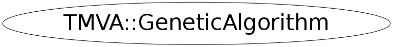

Function Members (Methods)
public:
| virtual | ~GeneticAlgorithm() |
| virtual Double_t | CalculateFitness() |
| static TClass* | Class() |
| virtual void | Evolution() |
| TMVA::GeneticAlgorithm | GeneticAlgorithm(const TMVA::GeneticAlgorithm&) |
| TMVA::GeneticAlgorithm | GeneticAlgorithm(TMVA::IFitterTarget& target, Int_t populationSize, const vector<TMVA::Interval*>& ranges, UInt_t seed = 0) |
| TMVA::GeneticPopulation& | GetGeneticPopulation() |
| Bool_t | GetMakeCopies() |
| Double_t | GetSpread() const |
| virtual Bool_t | HasConverged(Int_t steps = 10, Double_t ratio = 0.1) |
| void | Init() |
| virtual TClass* | IsA() const |
| virtual Double_t | NewFitness(Double_t oldValue, Double_t newValue) |
| void | SetMakeCopies(Bool_t s) |
| void | SetSpread(Double_t s) |
| virtual void | ShowMembers(TMemberInspector& insp) |
| virtual Double_t | SpreadControl(Int_t steps, Int_t ofSteps, Double_t factor) |
| virtual void | Streamer(TBuffer& b) |
| void | StreamerNVirtual(TBuffer& b) |
Data Members
public:
| Int_t | fConvCounter | converging? ... keeps track of the number of improvements |
protected:
| Double_t | fBestFitness | |
| Double_t | fConvValue | keeps track of the quantity of improvement |
| Bool_t | fFirstTime | if true its the first time, so no evolution yet |
| TMVA::IFitterTarget& | fFitterTarget | the fitter target |
| Double_t | fLastResult | remembers the last obtained result (for internal use) |
| TMVA::MsgLogger* | fLogger | message logger |
| Bool_t | fMakeCopies | if true, the population will make copies of the first individuals |
| Bool_t | fMirror | new values for mutation are mirror-mapped if outside of constraints |
| TMVA::GeneticPopulation | fPopulation | contains and controls the "individual" |
| Int_t | fPopulationSize | the size of the population |
| const vector<TMVA::Interval*>& | fRanges | parameter ranges |
| Double_t | fSpread | regulates the spread of the value change at mutation (sigma) |
| deque<Int_t> | fSuccessList | to adjust the stepSize |
Class Charts
{kind=link}
{kind=link}
{kind=link}
{kind=link}

Function documentation
GeneticAlgorithm(TMVA::IFitterTarget& target, Int_t populationSize, const vector<TMVA::Interval*>& ranges, UInt_t seed = 0)
Constructor
Parameters:
int populationSize : defines the number of "Individuals" which are created and tested
within one Generation (Iteration of the Evolution)
vector<TMVA::Interval*> ranges : Interval holds the information of an interval, where the GetMin
gets the low and GetMax gets the high constraint of the variable
the size of "ranges" is the number of coefficients which are optimised
Purpose:
Creates a random population with individuals of the size ranges.size()
void Init()
calls evolution, but if it is not the first time. If it's the first time, the random population created by the constructor is still not evaluated, .. therefore we wait for the second time init is called.
Double_t NewFitness(Double_t oldValue, Double_t newValue)
if the "fitnessFunction" is called multiple times for one set of factors (because i.e. each event of a TTree has to be assessed with each set of Factors proposed by the Genetic Algorithm) the value of the current calculation has to be added(? or else) to the value obtained up to now. example: some chi-square is calculated for every event, after every event the new chi-square (newValue) has to be simply added to the oldValue. this function has to be overridden eventually it might contain only the following return statement. return oldValue + newValue;
Double_t CalculateFitness()
starts the evaluation of the fitness of all different individuals of
the population.
this function calls implicitly (many times) the "fitnessFunction" which
has been overridden by the user.
void Evolution()
this function is called from "init" and controls the evolution of the
individuals.
the function can be overridden to change the parameters for mutation rate
sexual reproduction and so on.
Double_t SpreadControl(Int_t steps, Int_t ofSteps, Double_t factor)
this function provides the ability to change the stepSize of a mutation according to
the success of the last generations.
Parameters:
int ofSteps : = if OF the number of STEPS given in this variable (ofSteps)
int successSteps : >sucessSteps Generations could improve the result
double factor : than multiply the stepSize ( spread ) by this factor
(if ofSteps == successSteps nothing is changed, if ofSteps < successSteps, the spread
is divided by the factor)
using this function one can increase the stepSize of the mutation when we have
good success (to pass fast through the easy phase-space) and reduce the stepSize
if we are in a difficult "territory" of the phase-space.
Bool_t HasConverged(Int_t steps = 10, Double_t ratio = 0.1)
gives back true if the last "steps" steps have lead to an improvement of the "fitness" of the "individuals" of at least "improvement" this gives a simple measure of if the fitness of the individuals is converging and no major improvement is to be expected soon.
GeneticAlgorithm(TMVA::IFitterTarget& target, Int_t populationSize, const vector<TMVA::Interval*>& ranges, UInt_t seed = 0)